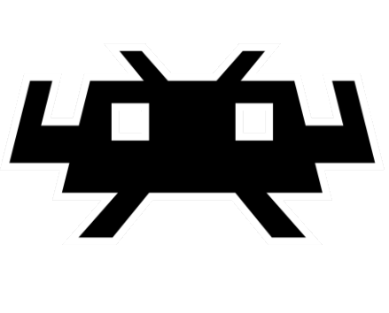
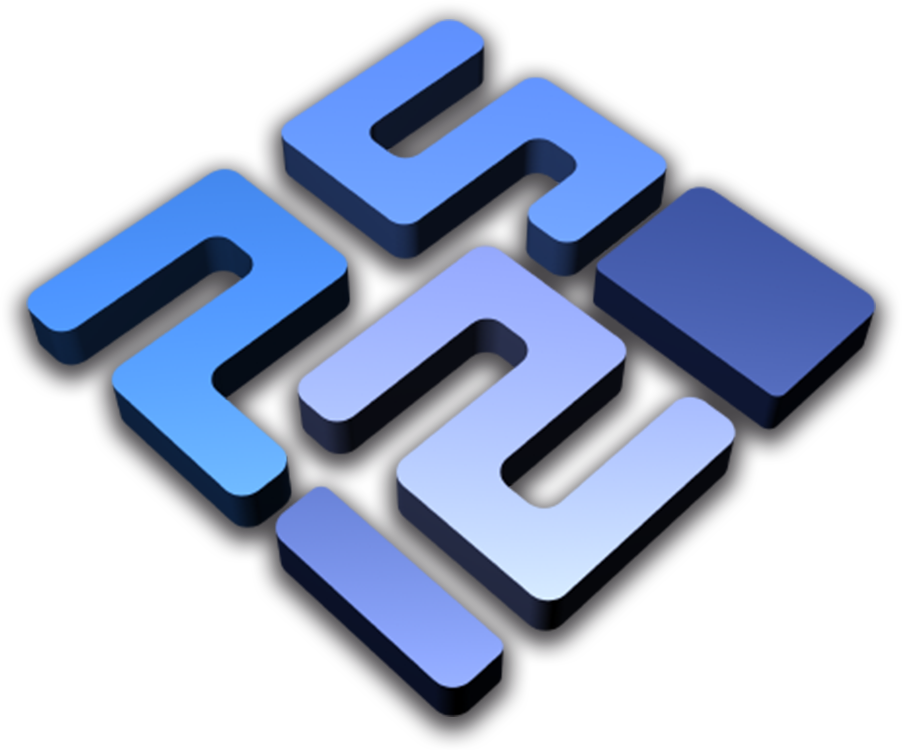
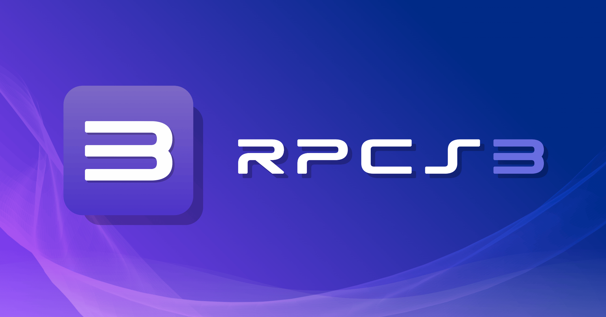
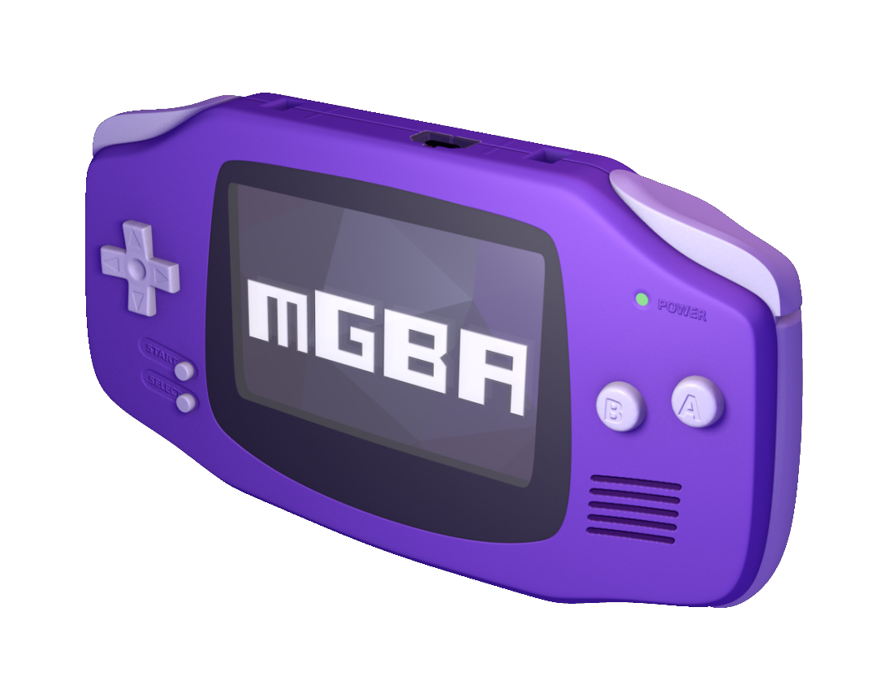

RetroArchRetroArch is the reference frontend for the libretro API. It is a free, open-source, and cross-platform application that enables you to run classic games on a wide range of computers and consoles through a slick graphical interface. It uses a plugin system called "cores", each core is a self-contained emulator for a specific system, meaning a single install of RetroArch can emulate dozens of consoles at once.
RetroArch is available on Windows, macOS, Linux, Android, iOS, and even consoles like the PS3, Wii, and Switch. Its unified interface, shader support, and netplay features make it the go-to choice for enthusiasts who want one app to rule them all.
Dolphin is an emulator for Nintendo's GameCube and Wii consoles. First released in 2003, it has become one of the most mature and accurate emulators available, capable of running the vast majority of the GameCube and Wii libraries at full speed with enhancements like HD resolution, anti-aliasing, and widescreen support that surpass the original hardware.
Dolphin supports the Wii Remote via Bluetooth passthrough, allowing you to use your real Wiimotes for an authentic experience. It also features netplay, save states, and an active development community that continues to push compatibility and accuracy forward.

PCSX2PCSX2 is a free and open-source PlayStation 2 emulator for Windows, Linux, and macOS. Development began in 2001, making it one of the longest-running emulator projects still under active development. Its latest Qt-based interface brought a major overhaul, with a per-game settings system, texture replacements, and dramatically improved compatibility and performance.
The PS2 was notoriously difficult hardware to emulate accurately, yet PCSX2 managed, as it can now run well over 95% of the PS2 library, often at resolutions far beyond the original 480i output. A PS2 BIOS dump from your own console is required to run games.
RPCS3 is a free and open-source PlayStation 3 emulator for Windows, Linux, and macOS. Given the PS3's complex Cell processor architecture, it was once thought nearly impossible to emulate, RPCS3 proved otherwise. The project has seen explosive progress in recent years, with thousands of titles now reaching playable or fully functional status.
RPCS3 requires a reasonably modern CPU with strong single-threaded performance. It features shader caching, Vulkan and OpenGL rendering backends, and supports both disc image dumps and PSN game installs. Some titles even run faster and at higher resolutions than they did on the original hardware.

RPCS3
mGBAmGBA is a Game Boy Advance emulator that prioritizes accuracy and portability. It also supports Game Boy and Game Boy Color emulation, making it an all-in-one solution for the entire Game Boy family. Despite its focus on accuracy, mGBA is lightweight enough to run on low-end hardware and even embedded devices.
mGBA features link cable emulation for multiplayer, cheats support via GameShark and Action Replay codes, and a robust debugger useful for ROM hacking and homebrew development. It is widely considered the best GBA emulator currently available, and serves as the GBA core in many RetroArch setups.